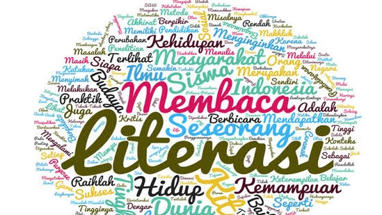

Pahlawan Masa Kini: Pejuang Literasi Melawan Kemiskinan dan Kebodohan
Teknologi | 11 November 2019 | 13:30 WIB
Saya mencoba memahami topik yang diminta Kompasiana, sebagai topik pilihannya yaitu pahlawan 4.0: SJW. Setelah memahami sedikit apa itu SJW akhirnya saya bisa menuangkan dalam bentuk tulisan ini. supaya paham apa itu SJW? Baiklah, saya jelaskan dulu apa itu yang dimaksud SJW (social justice warrior), jadi intinya SJW ini hanya merupakan istilah bagi para aktivis atau komunitas tertentu dalam berjuang bagi keadilan pihak yang terpinggirkan, kurang beruntung, hingga mengalami diskriminasi. Itu kira-kira batasan yang diberikan kompasiana yang menjadi acuan saya dalam menggoreskan tulisan.
Saya juga bisa menterjemahkan SJW adalah sebagai alat atau sarana untuk para pejuang keadilan social, untuk memperjuangkan dari belenggu kebodohan dan kemiskinan.Itu barangkali tema pokoknya sehubungan adanya Peringatan Hari Pahlawan, 10 November 2019.
Baiklah, saya akan mencoba menuangkan dalam bentuk tulisan dan bagaimana saya menarasikannya supaya terkait dengan isu Peringatan Hari Pahlawan.
Pada peringatan Hari pahlawan, merupakan momentum yang sangat tepat, untuk kita sama-sama merenungkan makna kepahlawanan dengan mengenang jasa para pahlawan yang telah gugur memperjuangkan kemerdekaan, yang tentunya perlu menjadi contoh bagi kita dan teladan generasi masa kini, dengan menunjukan semangat untuk terus berjuang, dengan cara dan bentuk yang berbeda dengan pahlawan tempo dulu dalam mengusir penjajah, tetapi kini lebih diorientasikan pada kegiatan bagaimana cara untuk mengusir kebodohan dan kemiskinan.
Saya kutip dari Kompas.com, Pesan Kemensos, yang dibacakan Menristek Bambang Brodjonegoro dalam upacara hari peringatan hari pahlawan di lapangan institut teknologi sepuluh November (ITS) Surabaya 10/112019, "peringatan hari pahlawan kita bangkitkan semangat berinovasi bagi anak bangsa untuk menjadi pahlawan masa kini sebagaimana tema peringatan hari pahlawan tahun 2019: Aku pahlawan masa kini."
Selanjutnya Menristek Bambang menyampaikan, " kita perlu juga menumbuhkan semangat kepahlawan dengan cara menorehkan prestasi di berbagai bidang kehidupan memberikan kemaslahatan bagi masyarakat dan membawa nama harum bangsa di mata internasional. Jangan sampai tangan-tangan jahil atau pihak tidak bertanggungjawab merusak persatuan dan kesatuan bangsa, jangan biarkan negeri kita terkoyak tercerai-berai terprovokasi untuk saling menghasut dan berkonflik satu sama lain. Mari kita maknai hari pahlawan dengan nyata bekerja dan bekerja membangun negeri menuju Indonesia maju." Pesannya.
Kita, juga perlu mengenang Pesan Bung Karno sang proklamator Bangsa Indonesia, supaya kita jangan sekali-kali melupakan sejarah (Jas Merah). Hari pahlawan 10 November 2019, kita mengenang para tokoh pejuang kemerdekaan tempo dulu mengusir penjajah, mulai dari perjuangan Bung Karno, Bung Hatta, Bung Tomo dengan arek-arek suroboyo yang telah berani mati, mereka bertempur memperjuangkan kemerdekaan, dengan mengusir penjajah, bermodalkan semangat dan bermodalkan bambu runcing tak mengenal takut mengusir penjajahan.
Kini generasi millennial, sebagai generasi digital, bak ibarat pahlawan 4.0 . Pahlawan pada generasi digital, rupaya tantangn generasi digital tak kalah menarik untuk dikupas dan disajikan dalam tulisan ini, karena perjuangan generasi digital lebih condong dalam mewujudkan perjuangan dalam suatu gerakan literasi.
Ibaratnya pahlawan dulu berjuang mengusir penjajah dengan membawa senjata bambu runcing, kini generasi digital berjuang lewat senjata pena atau senjata tulisan yang dicengkramkan dalam bentuk berkegiatan literasi, yang berjuang melawaan belenggu kebodohan dan kemiskinan, yang tentunya tak kalah serunya melawan kemiskinan dan kebodohan itu, karena belenggu kemiskinan dan kebodohan ini jika terus dibiarkan mengakibatkan menyengsarakan rakyat. tanpa solusi untuk membukakan mata hati segenap rakyat, yang tak lepas dari teknologi informasi, generasi yang memperjuangkan kemerdekaan berliterasi digital.
Jadi generasai digital yang berjuang melawan kemiskinan dan kebodohan. Generasi ini, umumnya menggandrungi kegiatan dan aktivitasnya yang tak lepas dari media digital, dan selalu membawa kebahagiaan orang lain melaui bagaimana cara mengeluarkan dari praktek yang tak biasa dilakukan menjadi terobosan yang bisa terformulasikan lewat tuangan nuansa baru yang lebih provokatif untuk mendorong masyarakat tertentu merubah kebiasaan dalam kehidupannya, supaya lebih baik. Saya lebih tertarik menggiring opini pada titik sentral yaitu pekerja social, mungkin lebih cocok istilah ini daripada pejuang keadilan social. Pekerja keadilan social./p>
Karena titik sentral bangsa ini dari sejak Indonesia merdeka Yaitu melawan kemiskinan dan kebodohan itu, hal itu jelas tergambar dalam tujuan bangsa mencerdasakan kehidupan bangsa dan mensejahteraan bangsa. Dari melawan kemiskinan dan kebodohan itu, yang terus diperjuangkan oleh para pendiri bangsa.